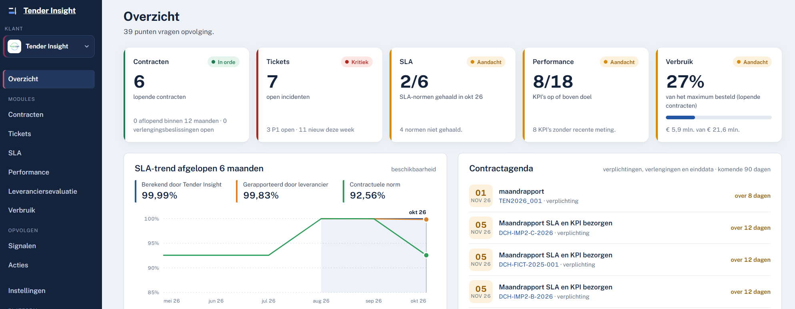
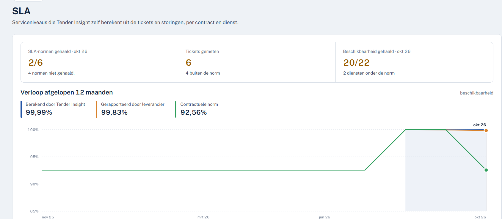
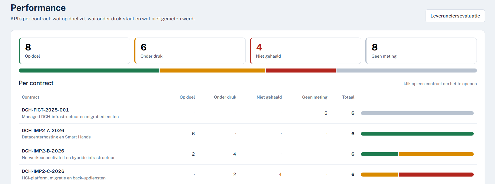
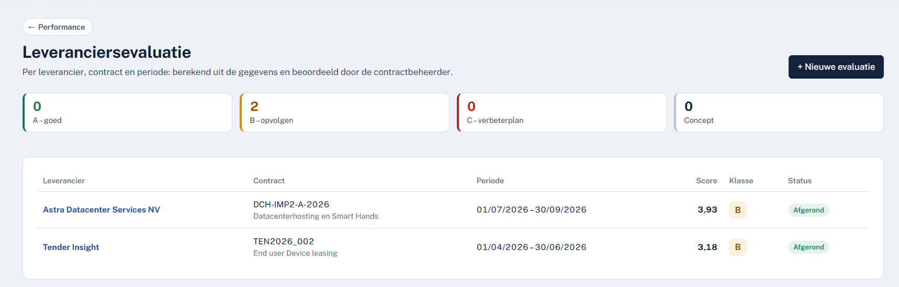
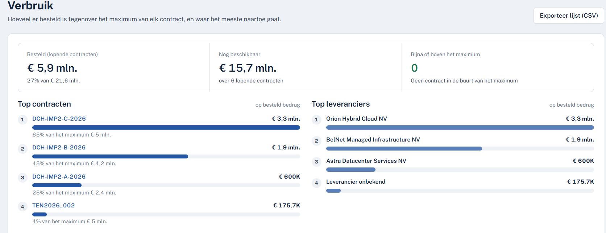
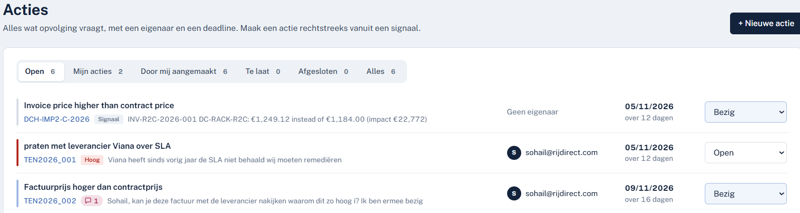

Centraal overzicht
Contracten, incidenten, verplichtingen en beslismomenten in één actuele cockpit.
Tender Insight Product
Van contractafspraak naar aantoonbare prestatie. Breng contracten, verplichtingen, SLA's, KPI's, leveranciers en budgetten samen in één bestuurbare omgeving.

Eén operationeel beeld
De app verbindt afspraken met dagelijkse uitvoering. Contractbeheerders zien waar prestaties afwijken, welke verplichtingen eraan komen en wie actie moet nemen.
Contracten, incidenten, verplichtingen en beslismomenten in één actuele cockpit.
Vergelijk leveranciersrapportage met berekende SLA- en KPI-resultaten.
Zet signalen om in acties met een duidelijke eigenaar, prioriteit en deadline.
Volg bestedingen, resterende ruimte en concentratie per contract en leverancier.
Producttour
Ontdek hoe iedere module een concreet onderdeel van post-award contractmanagement ondersteunt.
Volg normen per contract en dienst, analyseer het verloop en vergelijk contractuele normen met leveranciersrapportage en eigen berekeningen.

Zie welke indicatoren op doel liggen, onder druk staan, niet gehaald zijn of nog niet gemeten worden.

Beoordeel leveranciers per contract en periode met een transparante score, klasse en opvolgstatus.

Volg hoeveel al besteld is, welke ruimte beschikbaar blijft en bij welke contracten of leveranciers de grootste uitgaven liggen.

Vertaal afwijkingen en aandachtspunten naar concrete taken. Iedere actie krijgt een eigenaar, deadline en actuele status.

Voor wie?
Klaar voor grip na de gunning?
We tonen de app graag aan de hand van uw eigen contractmanagementvragen.
Plan een productdemo De rechtstreekse app-link wordt toegevoegd zodra die beschikbaar is.